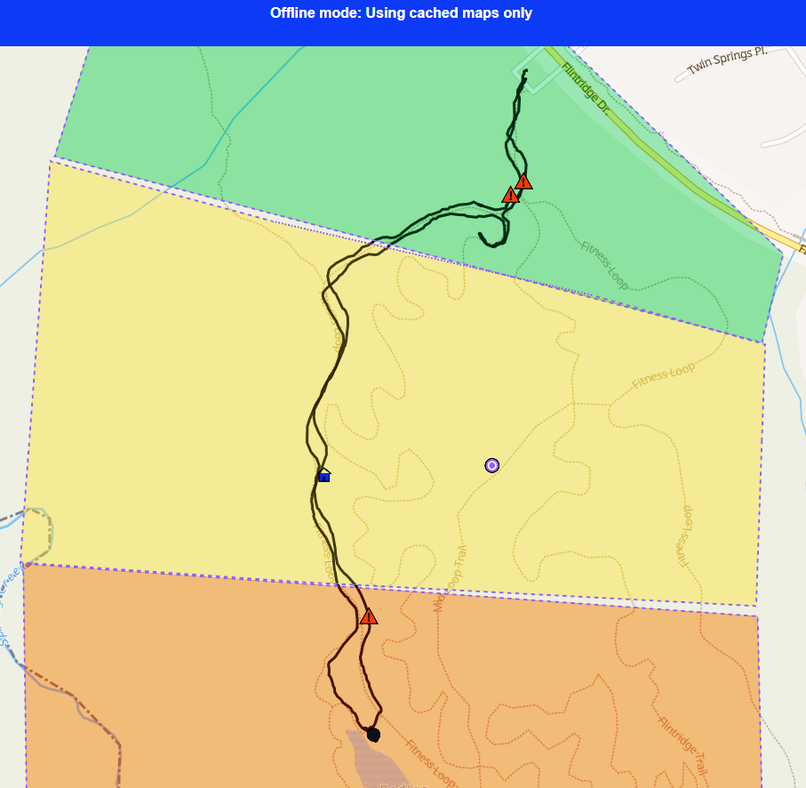

Drop POIs, log GPS tracks, draw coverage areas, and sync when you're back in range. No enterprise license. No failed downloads. No lost data.

Download map tiles by county. They stay on your device — no random failures, no re-downloading every time you deploy.
Tap the map, add details and photos, save. Works with zero signal. Data survives app close, reboot, or dead battery.
Draw polygons to mark sectors — to-search, active, or searched. See at a glance where your team has and hasn't been.
Back in range? Tap sync. POIs, tracks, and coverage merge cleanly — no failed syncs, no orphaned records.
Record where your team actually went. Distance, duration, and route saved fully offline.
One-tap hazard capture from a moving vehicle. Camera-first, GPS-tagged, auto-synced. No stopping, no forms.
Send a link. Open it. Install from the browser. Your team is live in under 60 seconds on any device.
Everyone works from the same map. POIs, tracks, and coverage from your whole team merge after sync.
Built for teams who've tried ArcGIS Field Maps — and need something that actually works offline.
Most apps treat connectivity as binary — online or offline. In the field, you're usually somewhere in between: your phone shows bars, but nothing loads.
BlocNav was designed for this "deceptive connectivity" problem. Local data is always available first, and the system never blocks your maps waiting on a network that isn't really there.
"The app shows signal, maps start to load, then everything freezes. Your team is standing there. Nothing works."
This is the scenario BlocNav was built around. Every data operation is local-first — maps, POIs, tracks, and coverage all read from device storage before touching the network.
local storage → network · never the reverse
Visit the URL on any phone, tablet, or laptop. Install the PWA from your browser in one tap — no app store.
Select counties. Tiles download and verify automatically. Stored locally until you delete them.
Drop POIs, log tracks, draw coverage. Everything saves locally — no bars required.
Back in range? One tap. Your team's data merges into a single shared map.
BlocNav is in active pilot testing with field teams in Texas. If your team works in low-connectivity environments and needs mapping that actually works offline, let's talk.
contact@blocnav.com Tell us your use case — we'll set up a walkthrough.